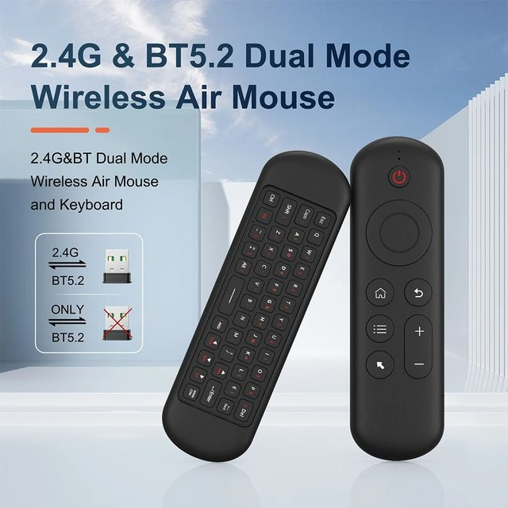
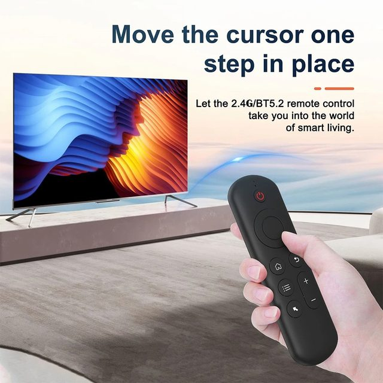
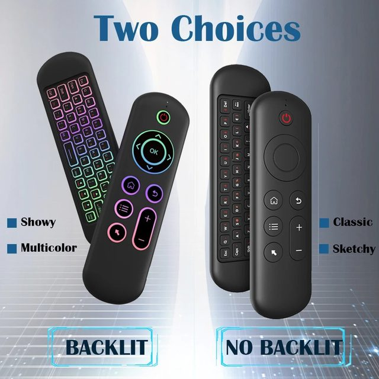
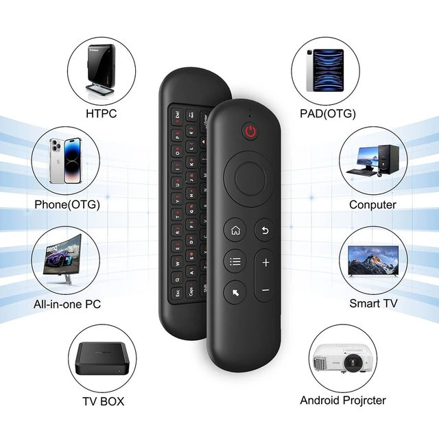
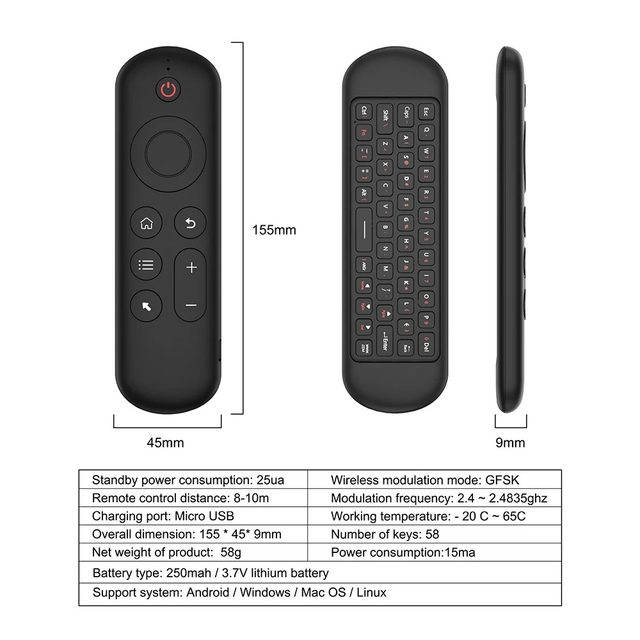
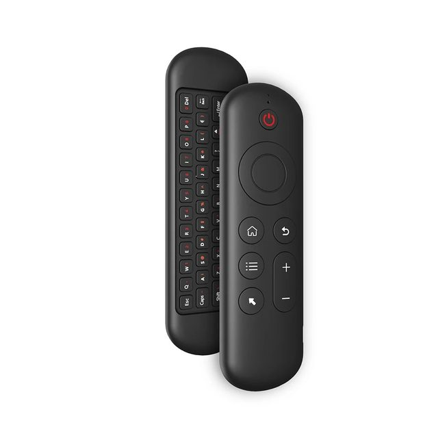
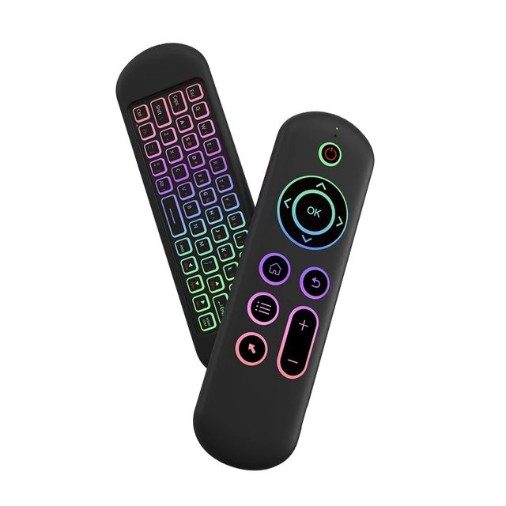

Support system: for Android / Windows / Mac OS /Linux
2.4G MODE
1.For initial use , plug a USB receiver into the USB port of device and wait for 20-60 seconds to install driver of USB receiver . Move the mouse the mouse cursor can move on the screen means that pairing is successful;
2.if it is unsuccessful , press and hold [ OK and [ BACK ] buttons , LED light begin to flash . Pairing is successful when LED light stop flashing.
BT 5.2 MODE
1 . Before using this device , first you must turn on the BT function of the lain device;
2 . Then long press ; OK + Return keys , when the LED turns to flash quickly, the product enters the pre pairing;
3 , Click add search new devices on the main device to find this air remotes name ( Example : BT-REMOTE ) . Click the name can to connecting;
4 . After the product is successfully connected , the direction of the mouse pointer can be controlled by waving in the air;
5 .If the connection is not successful , please perform the operation steps of item 2-4 again;
6 . Reconnect efficiency description : The normal reconnect time of this product is 3-5 seconds after it is normally paired with the main equipment;
7 . This product can only remember the pairing information of one main device , when the product is connected to a new device , the connection of historical devices is not supported after.







G10S Pro BT（with Gyroscope ,with Backlight,with BT ）
Features:
- [ Voice Search Function ]
- V10 have Voice search function. All you have to do is ask. Speak into the voice remote control and V10 Box
- [ Air mouse & Gyroscope Function ]
- With 3-Gyro + 3-Gsensor, it's more convenient to easy operate in horizontal and vertical mode.
- [ IR Learning Function ]
- Only the ''Power'' button can programme / learning Function .